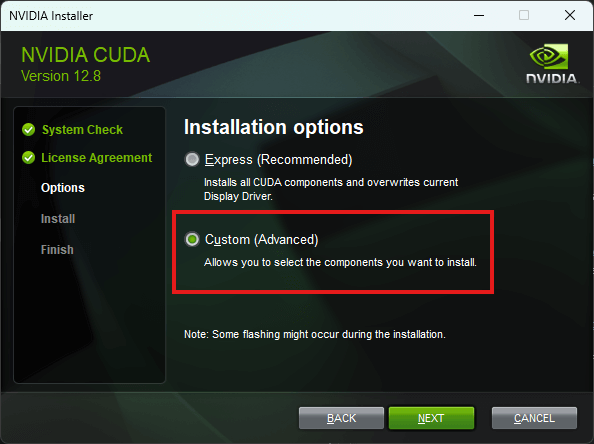
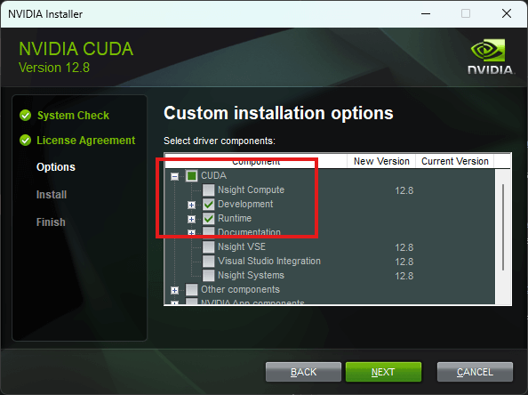
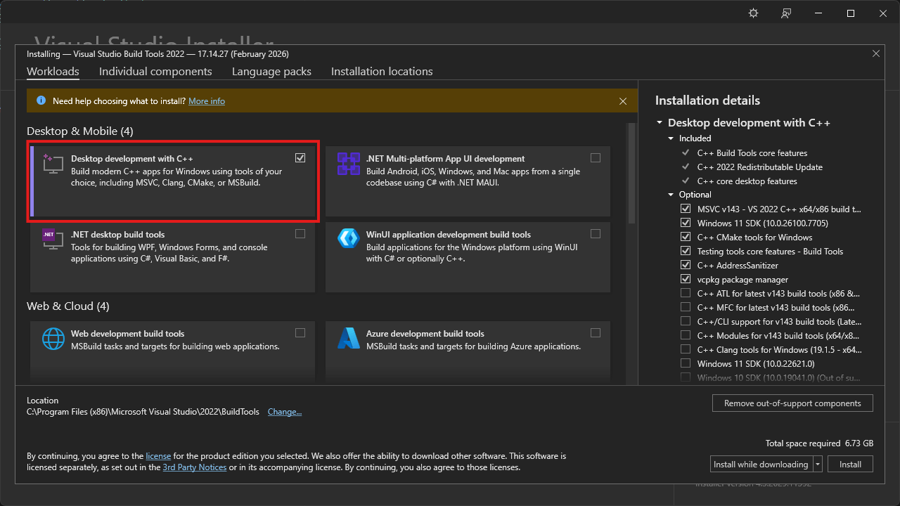

System Requirements¶
For optimal performance, Autolume relies on custom CUDA code compiled on your machine:
- Windows and Linux: CUDA 12.8+ Development and Runtime libraries are required.
- Windows only: Microsoft C++ Build Tools are additionally required.
Failure to install and properly configure these can slow down training performance by ~250% (3.5x slower).
CUDA 12.8 or newer (Windows and Linux)¶
Minimum components:
- CUDA Development
- CUDA Runtime


Visual Studio 2022 C++ Build Tools (Windows only)¶
Minimum components:
- Desktop development with C++
